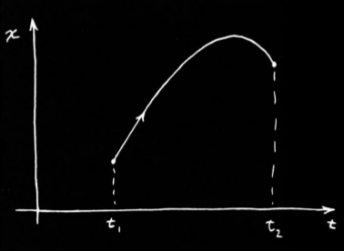
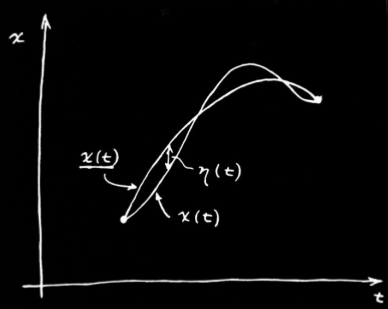

Lagrange Biçimi (Formalism)
Feynman'dan [3, 19-1]. Diyelim ki bir obje bir noktadan diğerine serbest hareketle (dışarıdan iteklenmeden, baştan bir ittirmeyle) ilerliyor. Bir "yerçekim alanında" hareket ettiği söylenir, fakat bu dünya üzerinde bariz olanın ilanı, dünyada hareket eden herşey onun yerçekimi alanında. Neyse, bu şekilde ilerleyen bir objenin $x(t)$ yolunu takip ettiğini düşünelim. Şimdilik tek bir eksene bakalım, dikey eksen, yani objenin nasıl yukarı çıkıp aşağı indiği. Eğer $x(t)$'yi zamana göre grafiklersek diyelim takip edilen yol alttaki gibi,

Bu yol, doğanın zorladığı yol, öyledir ki, yolun her noktasında o noktadaki kinetik enerji $1/2 m(\mathrm{d} x/\mathrm{d} t)^2$'den potansiyel enerji $mgx$'i çıkartırsak ve bu farkı $t$ üzerinden entegre edersek (yani bir nevi averajını alırsak) elde edilen sonuç diğer yollara nazaran en minimal olandır. Bu entegral,
$$ S = \int_{t_1}^{t_2} \left[ \frac{1}{2} m \left( \frac{\mathrm{d} x}{\mathrm{d} t} \right)^2 - mgx \right] \mathrm{d} t $$
Kimi yollarda belki başta çok fazla kinetik enerji olurdu, ama aynı zamanda aynı notaya gelmek için bu sefer hızlı yavaşlamak gerekirdi, yani doğru cevap, doğanın optimize ettiği cevap kinetik ve potansiyel enerji arasında öyle bir denge bulmak ki averaj hızdan fazla sapmadan (yani en az enerjiyle) bir noktadan diğerine gitmek.
Asında örnek daha da basitleştirilebilirdi, bu kural diyor ki diyelim bir serbest parçacık var, üzerinde potansiyel enerji etkisi olmasın, sadece hiza bakalım, bu parçacığın belli bir zaman içinde bir noktadan diğerine gitmesi için averaj, sabit hızda gitmesi gerekir. Sabit derken tüm mesafe bölü istenen zaman, eğer 200 km'yi 2 saatte gideceksek 200 km/h. Niye? Çünkü parçacık başka bir şekilde gidiyor olsaydı bazen averajdan çok bazen averajdan az hızla gidiyor olurdu, ve gidilmesi için gereken hız belli, mesafe bölü zaman. Yani eğer evden ise arabayla belli bir zamanda gitmeniz gerekiyorsa sabit hızda gidebilirdiniz, ya da başta çok hızlanıp sona yakın sürekli frene basıp yavaşlayabilirdiniz, belki bazen geri giderdiniz, sonra ileri, vs. Fakat sabit hız dışında herhangi bir şekilde giderseniz bazen çok bazen az hızlı gitmiş olurdunuz. Bir ortalama etrafında sürekli sapma gösteren bir değişkenin karesinin ortalaması her zaman ortalamanın karesinden fazladır. Bunu {\em İstatistik, Beklenti, Varyans, Kovaryans ve Korelasyon} yazından gördük,
$$ Var(Y) = E( Y^2 - 2YE(Y) + (E(Y)^2) )$$
$$ = E(Y^2) - 2E(Y)E(Y) + (E(Y)^2)$$
$$ Var(Y) = E(Y^2) - (E(Y)^2)$$
$E(Y^2)$ karenin ortalaması, $E(Y)^2$ ortalamanın karesi. İlki ikinciden büyük çünkü eşitliğin sol tarafında varyasyon $Var(Y)$ var.
Potansiyel enerjiyi dahil edince aradaki averaj farkın minimal olduğu yol takip ediliyor, potansiyel ve kinetik enerji arasında bir al-ver ilişkisi var, top atsak yukarı yukarı giderken potansiyeli artıyor, artıyor ama hızı yavaşlıyor; ya da aşağı düşerken potansiyel azalıp kinetik enerji artıyor, bu al-ver ilişkisinin basit bir çıkartma ile yakalayabiliyoruz.
Bu prensibe dayalı olarak Newton kanunları türetilebilir. Öyle bir yol $\underline{x}(t)$ var ki bu optimal yol, o yol bazlı olarak hesaplanan $S$'nin birinci derece yaklaşıklamasının optimal yoldan farkı sıfırdır. Yani bir anlamda optimizasyon problemlerinde türevi sıfıra eşitleyip çözdüğümüz gibi (1. derece yaklaşıksallama) burada da $\underline{x}(t)$'dan ufak bir sapma $\eta(t)$ hayal edebiliriz, ve ana formülde $x(t) = \underline{x}(t) + \eta(t)$ ile açılım yapıp elde edilen sonucu $\underline{x}$ noktasındaki $\underline{S}$'ten çıkartıp sıfıra eşitleyip çözebiliriz, optimalliğin bize hangi formülleri sunduğuna bakabiliriz.

Ana formülü tekrar yazalım ve potansiyeli $V(x)$ ile belirtelim,
$$ S = \int_{t_1}^{t_2} \left[ \frac{m}{2} \left( \frac{\mathrm{d} x}{\mathrm{d} t} \right)^2 - V(x) \right] \mathrm{d} t $$
Yerine koyduktan sonra
$$ S = \int_{t_1}^{t_2} \left[ \frac{m}{2} \left( \frac{\mathrm{d} \underline{x}}{\mathrm{d} t} + \frac{\mathrm{d} \eta}{\mathrm{d} t} \right)^2 - V(\underline{x}) \right] \mathrm{d} t $$
Karesel işlemi açalım,
$$ \left( \frac{\mathrm{d} \underline{x}}{\mathrm{d} t}\right)^2 + 2 \frac{\mathrm{d} \underline{x}}{\mathrm{d} t} \frac{\mathrm{d} \eta}{\mathrm{d} t} + \left( \frac{\mathrm{d} \eta}{\mathrm{d} t}\right)^2 $$
Birinci yaklaşıksallamaya baktığımız için $\eta^2$ içeren tüm terimleri "iki veya daha fazla derece" denen bir kutuya atabilirim,
$$ \frac{m}{2} \left( \frac{\mathrm{d} \underline{x}}{\mathrm{d} t}\right)^2 + m \frac{\mathrm{d} \underline{x}}{\mathrm{d} t} \frac{\mathrm{d} \eta}{\mathrm{d} t} + (\textrm{iki veya daha fazla derece}) $$
Potansiyel $V$'ye gelelim. $\eta$'yi çok ufak bir değişim kabul ettiğim için $V(x)$'in $\underline{x}$ yakınında Taylor açılımını kullanabilirim,
$$ V(\underline{x} + \eta) = V(\underline{x}) + \eta V'(\underline{x}) + \frac{\eta^2}{2}V"(\eta) + ... $$
Her şeyi bir araya koyuyorum, $\eta^2$ içeren terimler daha önceki kutuya düşecek tabii,
$$ S = \int_{t_1}^{t_2} \left[ \frac{m}{2} \left( \frac{\mathrm{d} \underline{x}}{\mathrm{d} t}^2 \right)^2 - V(\underline{x}) + m \frac{\mathrm{d} \underline{x}}{\mathrm{d} t} \frac{\mathrm{d} \eta}{\mathrm{d} t} - \eta V'(\underline{x}) + (\textrm{iki veya daha fazla derece}) \right] \mathrm{d} t $$
Şimdi ilk iki terime bakarsak bu terimlerin optimal yol $\underline{x}$ için hesaplayacağım formülde de aynen bu şekilde olacağını görebilirdim. O zaman $S$ ile $\underline{S}$ arasındaki farkı alırken bu terimler yokolacak, geri kalanları (ve ikinci derece ve fazlası terimleri atarak) aradığım fark $\delta S$ diyeceğim büyüklükte kullanabilirim.
$$ \delta S = \int_{t_1}^{t_2} \left[ m \frac{\mathrm{d}\underline{x}}{\mathrm{d} t} \frac{\mathrm{d}\eta}{\mathrm{d} t} - \eta V'(\underline{x}) \right] \mathrm{d} t \qquad (5) $$
Artık diyebilirim ki $\underline{x}$'in ne olduğunu bilmiyorum, ama her ne olursa olsun üstteki entegral (fark) sıfır olmalı. Şimdi $\eta$ türevinden kurtulmak istiyoruz, $\eta$'nin herhangi bir şey olabileceğini söyledik, ve görmek istediğimiz "$\eta$ çarpı birşeyler" ki o birşeylerin sıfır olması gerekeceğinden hareketle ileri gidebilelim. Parçalı entegral alarak bunu yapabiliriz, parçalı entegral genel formu hatırlarsak,
$$ \int u \mathrm{d} v = uv - \int v \mathrm{d} u $$
$u = m \frac{\mathrm{d}\underline{x}}{\mathrm{d} t}, \quad \mathrm{d} v = \frac{\mathrm{d} \eta}{\mathrm{d} t}$
O zaman (5) şu şekilde yazılabilir,
$$ = m \frac{\mathrm{d} \underline{x}}{\mathrm{d} t} \eta \bigg\vert_{t_1}^{t_2} - \int_{t_1}^{t_2} \frac{\mathrm{d}}{\mathrm{d} t} \left( m \frac{\mathrm{d} \underline{x}}{\mathrm{d} t} \eta(t) \mathrm{d} t\right) - \int_{t_1}^{t_2} V'(\underline{x}) \eta(t) \mathrm{d} t $$
İlk terim yokolacak çünkü $\eta$'nin $t_1,t_2$'de sıfır olması gerektiğini söyledik,
$$ \delta S = \int_{t_1}^{t_2} \left[ -m \frac{\mathrm{d}^2 \underline{x}}{\mathrm{d} t^2} - V'(\underline{x}) \right] \eta(t) \mathrm{d} t $$
İstediğimiz forma eriştik. Üsttekinin sıfır olması için köşeli parantez içindekinin sıfır olması gerekir, yani
$$ \left[ -m \frac{\mathrm{d}^2 \underline{x}}{\mathrm{d} t^2} - V'(\underline{x}) \right] = 0 $$
olmalı. İşte Newton'un $F = ma$ formuna eriştik! Birinci terim kütle çarpı ivme (ikinci türev), ikinci terim potansiyel enerjinin türevi, yani kuvvet.
Kaynaklar
[3] Feynman, Feynman's Lectures on Physics, Millenial Edition, Vol 2
Yukarı